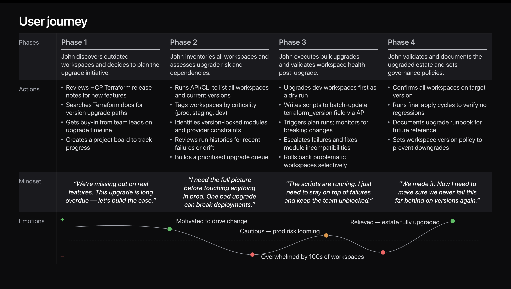

Bulk Terraform Version Update using Agentic Workforce
Organizations running Terraform at scale can end up with hundreds of workspaces, each pinned to a different mix of core, provider, and module versions. As security advisories and deprecations stack up, platform teams struggle to keep up with tracking and remediation across every workspace.
I worked with the platform engineering team to understand how they currently managed versions and updates, where the process broke down, and what information they needed to prioritize and act quickly. My responsibilities included mapping the existing workflow, identifying the biggest bottlenecks, and shaping a clearer, more scalable approach to monitoring and remediation.
Impact of Bulk version update feature
Following the release of this feature, the proportion of HCP workspaces running the latest Terraform version increased from 33% to more than 80% within two months. This rapid adoption demonstrates strong customer uptake and validates the effectiveness of the new upgrade experience.
The feature release led to a marked increase in Resources Under Management (RUM). Because Terraform’s revenue scales with the number of managed resources, this RUM growth translated into a clear increase in business revenue.
Built with Claude Code and the Helios MCP server
Demo developed using Claude Code and Helios Designs System MCP server. The demo is best viewed in wide desktop screens. Not suitable for mobile screens.
“Upgrading modules and providers becomes hell week. The full team ends up spending all their time upgrading and checking if anything has broken or not.”
Why upgrading is a complex engineering exercise
HashiCorp already provides tools to upgrade workspaces between versions, and has previously shared scripts that address parts of the process. With an AI agentic workforce, we can now offer a unified experience that upgrades workspaces fully autonomously with minimal human intervention.
Personas of the Terraform ecosystem
Who is affected by the bulk update?
Define the upgrade strategy, manage the CI/CD pipelines (e.g., Atlantis, Terraform Cloud/Enterprise), and ensure the Core version stays secure across the fleet.
Maintain the internal registry. When a provider changes (e.g., AWS 4.x to 5.x), they must update the building blocks so teams can consume them safely.
Usually cloud vendors or community maintainers who release the API updates. Their release cycle is the upstream trigger for all other personas.
App developers or SREs managing specific environments (Dev/Prod). They feel the brunt of the domino effect when they refactor workspace code to match new module requirements.
John upgrades hundreds of workspaces

Organisation posture and agentic workforce campaigns, with approval gates on every run.
Impact of Terraform Bulk Version Update
The Terraform Bulk Version Update feature shows how an agentic workflow can be designed to earn trust from infrastructure teams. By pairing automation with clear guardrails—scoped permissions, auditable change logs, and human-in-the-loop checkpoints—the experience reduces manual upgrade toil while keeping teams in control. The result is faster, safer adoption of the latest Terraform versions across hundreds of workspaces, turning a risky, repetitive operation into a routine, low-friction task. For UX, this underscores a core principle for enterprise tooling: agentic systems must be as transparent and verifiable as they are powerful, so teams can confidently let automation handle scale.